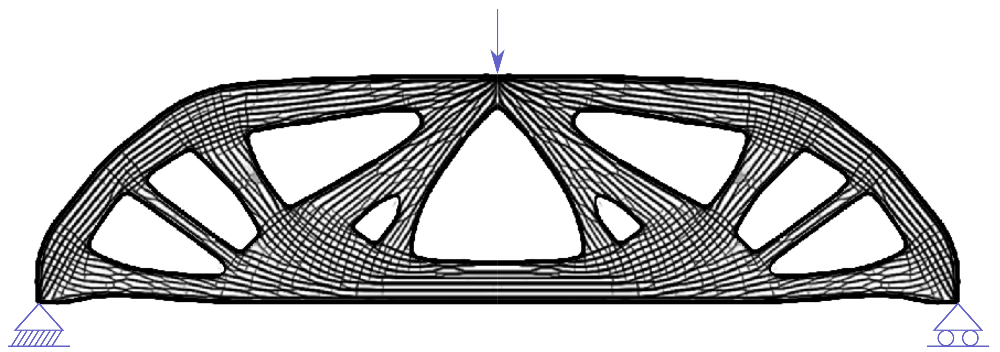

Minimum Compliance Topology Optimization of
Shell-Infill Composites for Additive Manufacturing
Computer Methods in Applied Mechanics and Engineering (CMAME), 2017
| Jun Wu | Anders Clausen | Ole Sigmund |
| TU Delft | DTU | DTU |

A shell-infill composite obtained from optimizing a simply supported beam.
Abstract
Additively manufactured parts are often composed of two sub-structures, a solid shell forming their exterior and a porous infill occupying the interior. To account for this feature this paper presents a novel method for generating simultaneously optimized shell and infill in the context of minimum compliance topology optimization. Our method builds upon two recently developed approaches that extend density-based topology optimization: A coating approach to obtain an optimized shell that is filled uniformly with a prescribed porous base material, and an infill approach which generates optimized, non-uniform infill within a prescribed shell. To evolve the shell and infill concurrently, our formulation assigns two sets of design variables: One set defines the base and the coating, while the other set defines the infill structures. The resulting intermediate density distributions are unified by a material interpolation model into a physical density field, upon which the compliance is minimized. Enhanced by an adapted robust formulation for controlling the minimum length scale of the base, our method generates optimized shell-infill composites suitable for additive manufacturing. We demonstrate the effectiveness of the proposed method on numerical examples, and analyze the influence of different design specifications.Related Projects
Infill Optimization for Additive Manufacturing -- Approaching Bone-like Porous Structures
Self-Supporting Rhombic Infill Structures for Additive Manufacturing
A System for High-Resolution Topology Optimization
Acknowledgements
The authors gratefully acknowledge the support from the H.C. Ørsted Postdoc Programme at the Technical University of Denmark, which has received funding from the People Programme (Marie Curie Actions) of the European Union's Seventh Framework Programme (FP7/2007-2013) under REA grant agreement no. 609405 (COFUNDPostdocDTU), and the support from the Villum foundation through the InnoTop VILLUM Investigator project.
Download
 |
Paper 9.1 MB |
Animation 33.1 MB |
Bibtex
@article{Wu2017CMAME,
author={Wu, Jun and Clausen, Anders and Sigmund, Ole},
title={Minimum Compliance Topology Optimization of Shell-Infill Composites for Additive Manufacturing},
journal={Computer Methods in Applied Mechanics and Engineering},
volume={326},
pages={358-375},
year={2017},
doi={https://doi.org/10.1016/j.cma.2017.08.018},
issn={0045-7825},
}